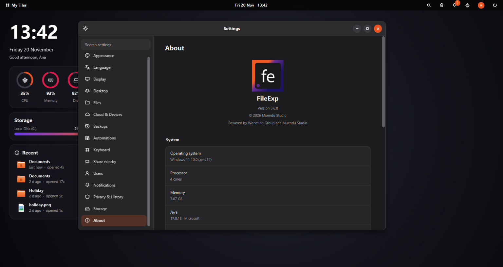

Troubleshooting
FileExp does not start#
- Wait for the start screen to finish: it shows for at least 3.4 seconds while the data opens.
- If the start screen shows "Could not start", note the message; the details are in
~/.fileexp/logs/fileexp-0.log. A damaged data file is restored from its.bakcopy; if that also fails, rename the folder~/.fileexp/dataand start again (your files are not affected, only the preferences). - On Windows, the portable
FileExp.exemust stay inside its folder, next toappandruntime.
A folder shows "Access denied"#
FileExp shows the reason given by the system. Open the folder with an account that has permission, or change the permissions in the folder properties of your system.
The search does not find a file I just created#
The home index updates in the background; a new file normally appears within seconds. Search inside a folder always reads the folder itself. Files in program folders (AppData, .git, .cache…) are not indexed.
A copy is slow or stopped#
Open the transfers panel: it shows the speed and the time left. Network drives and USB 2 drives are slower. A transfer can be cancelled; what was already copied stays.
I deleted something by mistake#
- Press Ctrl+Z right away, or the Undo button of the notification.
- Otherwise open the Trash and Restore.
- Shift+Delete and emptying the Trash cannot be undone.
The vault does not open#
The password is checked exactly, including upper and lower case and the keyboard layout. There is no recovery without the password.
Share nearby does not find the other computer#
- Both computers need FileExp 3.7 or newer with Share nearby on.
- They must be on the same network (some guest Wi-Fi networks isolate devices).
- Allow FileExp on private networks in the Windows firewall.
The text is too small or too big#
Settings › Appearance › Text size.
"Something went wrong"#
When an unexpected error happens, FileExp records it and shows the notification Something went wrong — without stopping your work. If the same error repeats, the notification appears at most once every 10 seconds. Nothing is lost: copies, moves and the other operations have their own messages and Undo.
Reporting a problem#

- Press Copy report on the notification, or open Settings › About › Diagnostics › Copy report.
- Paste it in your message, and describe what you did, what you expected and what happened.
The report has the version of FileExp, the system, Java and the last 20 problems, already without personal data (see Your data and privacy). Read it before you send it if you want: it is plain text.